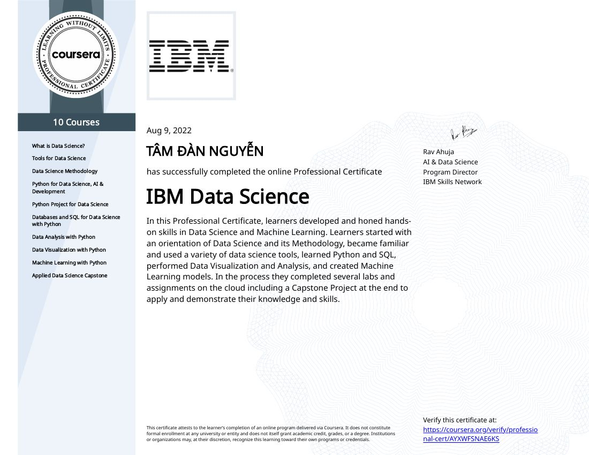
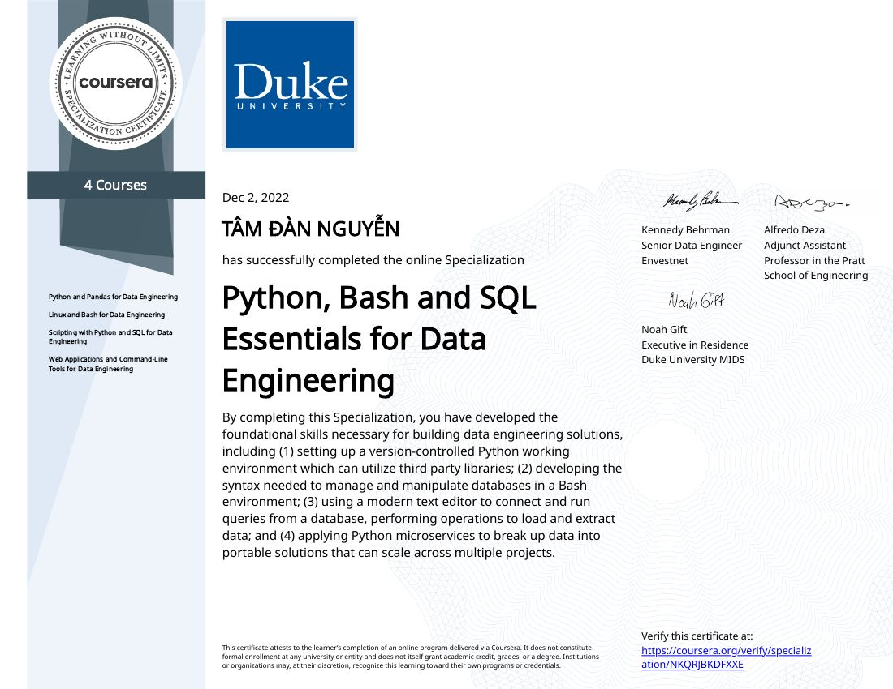
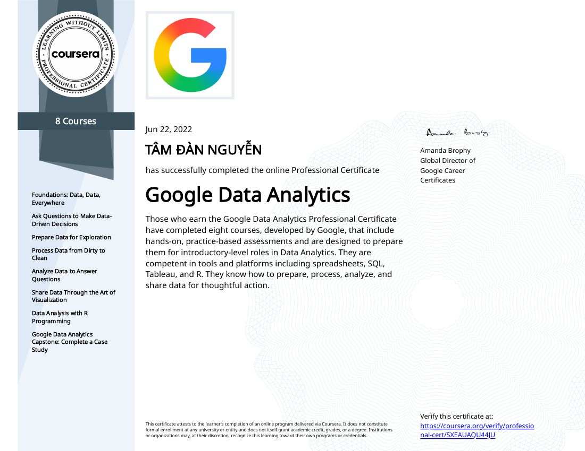
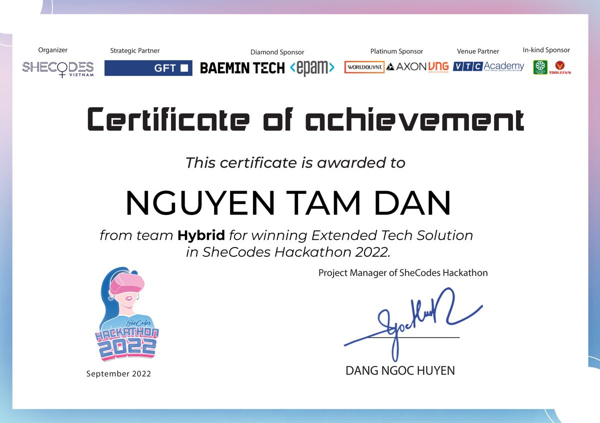

Business Analyst · Data & Analytics ·
Business Analyst · Data Science ·
Business Analyst (outsource) · Data Processing, IT Division ·
Credit Risk Analyst ·
Data Clerk · Business Information ·
Business Analyst · Data & Analytics
Business Analyst · Data Science
Business Analyst (outsource) · Data Processing, IT Division
Credit Risk Analyst
Data Clerk · Business Information
We built an AI agent that automated two of the slowest deliverables in the BA-to-data-engineering workflow: the Functional Requirements Document for the BA, and the transformation code for the data engineer. Both come from a single Business Requirements Document as input.
This is an actor-critic pattern: the AI is the actor, and business users are the critic. When the output is wrong, the comment on the platform identifies which logic path failed, the agent receives that feedback and fixes that specific point, and the cycle repeats until the output passes validation. Humans as the critic is the responsible version in a regulated bank, where wrong lending-feature logic has real consequences.
My role: I owned the business logic layer, not the engineering layer. I defined the input structure (what a BRD must contain for the agent to generate accurate output) and designed the UAT validation layer: the test cases and the expected-output framework business users judged the agent against.
1. A business user runs UAT with a test case and compares the output to the expected result.
2. If it differs, they comment on the platform and point to the logic path that is incorrect.
3. The agent receives the comment, locates the specific failure point and corrects that logic.
4. It regenerates the output, and the user re-validates against the same test case. The loop ends when the output matches the expected result.
In production AI systems the critic can be automated, but in a regulated banking environment the people who understand the business rules should confirm that the logic is right. That is also why I put the quality gate in the UAT design rather than trusting the generated output.
Problem. SME loan approval relied on manual credit evaluation. An RM or credit officer reviewed a customer's financials by hand to judge eligibility and set a limit. That meant long waits for customers and high operating cost for the bank, and it did not scale.
Solution. An automated decision engine that generates indicative lending limits without manual review of every case. My role was to define the input data requirements. This was the most critical piece: if the input data is wrong or incomplete, the engine approves customers who should not be approved or rejects ones who should. I worked with business, risk and technical teams so every data point was accurate, available and consistently structured.
I worked backwards from the credit decision: what is this customer's capacity and willingness to repay?
With the risk and business teams I checked which fields were available, reliably updated and predictive. We excluded fields that looked useful on paper but were inconsistently filled or updated late, because bad data in a decision engine is worse than no data.
Data gaps: flagged to engineering with fallback logic. If a required field is missing, the case goes to manual review instead of getting an incorrect automated limit.
Risk team: every requirement was reviewed against existing credit policy. I did not define what good credit is; I defined what data is needed to measure it.
1. Indicative, not final. The output was a recommendation. A human still reviewed cases above a threshold or outside normal parameters, and that was a fixed design constraint from the start.
2. Risk and compliance throughout, not just at the end. A requirement that could not be justified by credit policy did not go into the specification.
3. Explicit fallbacks. Missing data, unusual profiles and edge cases route to manual review. The goal was to automate standard cases reliably, not force automation onto every case.
The direct metrics were less manual approval effort and shorter customer waiting time, tracked by the operations team after go-live. The engine handled standard SME cases, which freed credit officers for complex ones. The wider effect is scalability: more applications without a proportional rise in headcount.
Where my ownership ended: false-approval rates were the risk team's job after launch, and predictive accuracy belonged to the data science team. My accountability was the input data layer.
The engine is only as good as its data. If a required field is poorly maintained upstream, output degrades without anyone noticing at once, so data quality is an ongoing responsibility, not a one-time delivery. It is also tuned to standard SME profiles. New companies with thin credit history, or unusual industries, may fall outside its reliable range, and for them manual review is the right answer.
Problem. The Retail Banking team saw low conversion in the credit card journey: customers started the application but did not finish. They could see the drop-off but not where or why.
What I built. A star-schema data model that combined three sources that had never been joined: survey data (FormBricks and ROC), customer profile data, and behavioral and transaction data from the app. The BI team built dashboards on it that showed the specific drop-off points. The main finding was that customers left at the product information page, because the content was not clear or compelling enough. It went to the policy team as a prioritized recommendation.
It was a deliberate trade-off. A fully normalized model would be more correct and scale better, but the BI team was building dashboards, not running joins across ten dimension tables. A star schema meant simpler queries, faster dashboards and fewer scripting errors in an MVP, where proving the concept mattered more than perfect architecture. I documented the trade-off so the team knew to revisit the design before production.
Push-back: the Solution Architect raised long-term scalability concerns. I accepted the risk and framed it as phase-appropriate design: right for MVP, revisit before scaling. We ended with a shared understanding.
Profile and transaction data had a clear customer identifier to join on. The survey data did not: FormBricks and ROC had their own response structures with no direct link to the bank's customer ID. I defined the join logic, meaning which fields could bridge a survey response to a customer record, with the survey and data engineering teams, making sure it did not create false matches. One wrong join key would corrupt the behavioral analysis at the source.
Validation: I sampled matched records by hand, cross-checked them against known customer interactions, and spot-checked edge cases such as repeat survey takers, anonymous responses and incomplete submissions.
Metrics defined: CSAT, NPS and CES at customer level, plus drop-off rate by journey stage, segmented by customer profile. Each had a business owner who would act on it.
Moderately confident, not certain. The survey data had a quality problem: many customers clicked through randomly. So we weighted behavioral data more heavily, mainly dwell time on the product information page combined with a high exit rate from it. Spending 10+ seconds on the benefits page and then leaving is a meaningful signal.
I told the business team this was a strong hypothesis, not a proven cause. Other explanations exist: the customer was not ready to commit, was comparing options, or was interrupted. I recommended an A/B test on the page content before a full redesign.
Involve the BI team earlier in the data model design, not only at handoff. They asked for metric definitions I had not anticipated, which caused rework.
Build a feedback loop from day one that tracks whether the insight led to action and whether the action improved conversion. A finding is only half the job.
Problem. Priority and Private Banking customers are the bank's highest-value segment, but their Relationship Managers had no consolidated view of what each customer held. CASA, time deposits, loans and investments lived in separate systems, so an RM checked four places to understand one relationship. Service was fragmented, cross-sell opportunities were hard to spot, and RMs spent time navigating systems instead of building relationships.
My role. I designed the data flow that brought all four product domains into one customer view, and worked with the UI team designing the RM application in Figma, reviewing their mockups against what the data could support and flagging gaps before they became development problems.
Each domain had its own structure, terms and update frequency. What CASA calls a balance and what the investment system calls a portfolio value both measure wealth, but they are calculated differently, updated at different times and stored differently. I defined a common data layer with unified field definitions. For each domain I asked the product team: what is the source of truth, how often is it updated, and what is the business definition of each key field?
Conflicts: the hardest coordination was between lending and investment teams, who disagreed on how customer net worth should be calculated. I did not pick a winner. I anchored on the RM's need: what must the RM see to serve this customer better? Both teams cared about that, which broke the deadlock.
Not aesthetics. The one question I answered was: can the data support what is being designed? If the UI showed a total net worth, I had to confirm a reliable source for every component: CASA balance, deposits, loans and investments. If one had a 24-hour lag, the figure could mislead. I also flagged requests for data that did not exist in usable form, such as investment performance in percentage terms, which needed historical prices outside the original scope. Catching that in Figma is a 30-minute conversation; after development it is a two-week delay.
Pushing back: some screens showed more data than was reliably available. I recommended showing only fields we could guarantee were accurate and current, with an indicator when data was pending refresh. Less information that is trustworthy beats more that is uncertain.
Defining the post-launch success metrics was something I flagged, but the business team owned measuring RM outcomes. The metrics I would use: time spent preparing for a client meeting, cross-sell conversion on RM-initiated conversations, and RM satisfaction with completeness and accuracy. The leading indicator is adoption: if RMs go back to checking four systems, the data quality or the UX is not good enough yet, whatever the system technically shows.
It is pre-AI infrastructure. The platform shows RMs what a customer holds; the natural next step is showing what a customer might need next, from portfolio, life stage and behavioral signals. That recommendation layer would sit on the consolidated view. Without clean, unified data, any AI recommendation would be unreliable, so the sequence is: get the data right first, then build intelligence on top.
{
"customer_id": "C001",
"loans": [
{ "type": "mortgage",
"balance": 800,
"overdue_days": 0 },
{ "type": "card",
"balance": 20,
"overdue_days": 35 }
]
}| customer_id | loan_count | total_balance | max_overdue_days |
|---|---|---|---|
| C001 | 2 | 820 | 35 |

Certificate
Certificate
Certificate
Certificate of achievementProblem. Software companies have no systematic way to measure developer output. Managers assign tasks by intuition, which creates hidden bottlenecks and mismatched assignments.
Solution. A data-driven prototype that analyzes behavioral and performance signals across completed tasks, classifies productivity patterns, and surfaces insights so managers can assign work better. I built the pipeline in Python and scikit-learn (cleaning, feature engineering, a classification model) and served the outputs through a FastAPI REST API. The part I am proudest of is the product thinking: I designed the output for non-technical business leaders by asking what a manager needs to see to make a better decision about their team. The team finished Top 4 and won the Extended Tech Solution award.
A student behavioral dataset: engagement levels, resource usage and participation patterns. In a hackathon you work with what is available to prove the concept. Its structure resembles developer signals, with behavioral inputs predicting output quality. In a real deployment the data would come from Jira and GitHub.
Yes. I handled the data pipeline, feature engineering and model training in Python, and built the FastAPI endpoint. I also led the team and was the sole presenter. It was my first time working across the full stack: business problem, data science and product communication.
Designing for non-technical users. The insights only have value if a manager can act on them without a data scientist explaining them, the same challenge any bank AI product faces.
The gap between accuracy and usefulness. I saw that a technically correct model nobody understands or trusts creates no value. Closing that gap is the job of an AI translator.
It was a hackathon prototype. The goal was to prove the concept and the user value in 48 hours, not to build a production system.
Observations 1 to 3 come from three different domains: customer analytics, wealth management, and AI delivery. Each stops at the same missing foundation.
Therefore the gap is structural, not the accident of one project. More tools would not close it. Theory would.
The next step is the theory, not another tool. That is why I am applying for a Master's. ■
tamdan5120@gmail.com